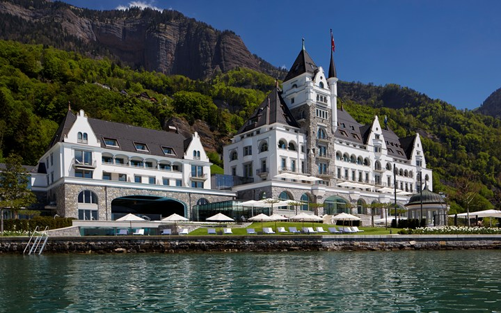

 The luxurious Park Hotel Vitznau right at the banks of Lake Lucerne has been entirely renovated in 2012 and 2013 and features its own private beach, 2 restaurants, a large spa area and free garage parking. Each of the suites and residences has been individually designed and offers 24-hour room service, free WiFi, a Nespresso Coffee Machine and a tea maker. Spa facilities include various saunas and steam baths, an ice grotto, a hot tub, as well as indoor and outdoor pools. A wide range of gourmet dishes is served in the 2 restaurants of Park Hotel Vitznau, which have an inviting lake-view terrace. Moreover you can select from fine wines from all over the world stored in 6 wine cellars on site. A free shuttle service to the Rigi Cable Car is provided by the hotel. The Küssnacht Train Station is 13 km and Lucerne is 26 km away. Couples particularly like the location — they rated it 9.8 for a two-person trip.
Switzerland Page